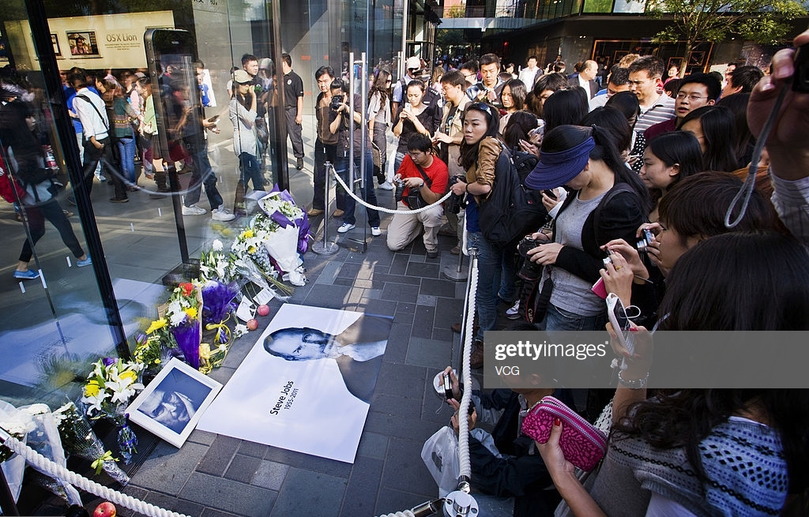
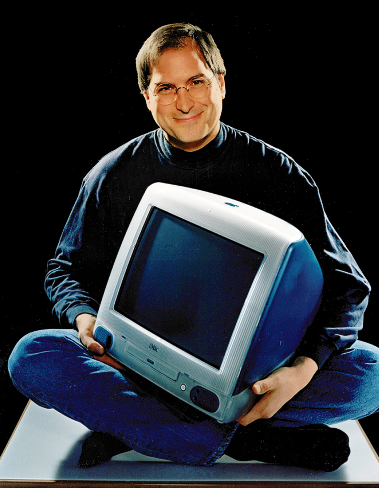
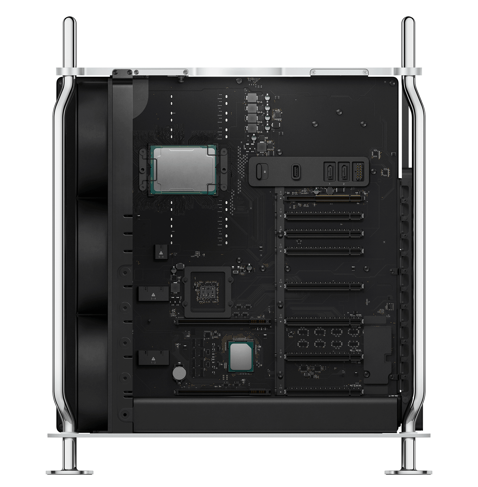
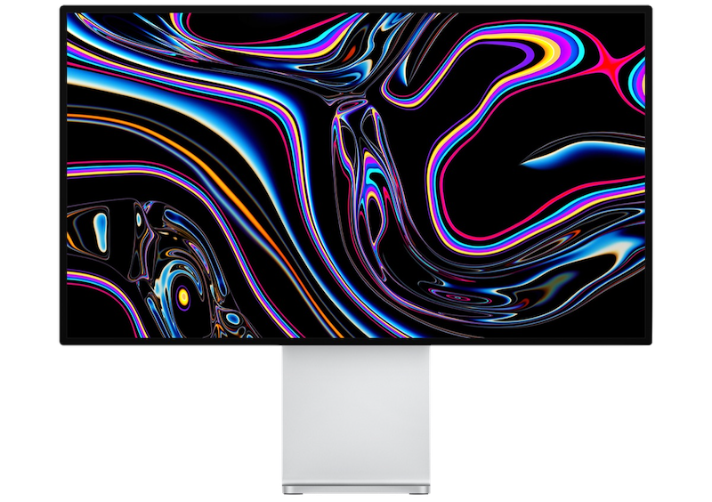
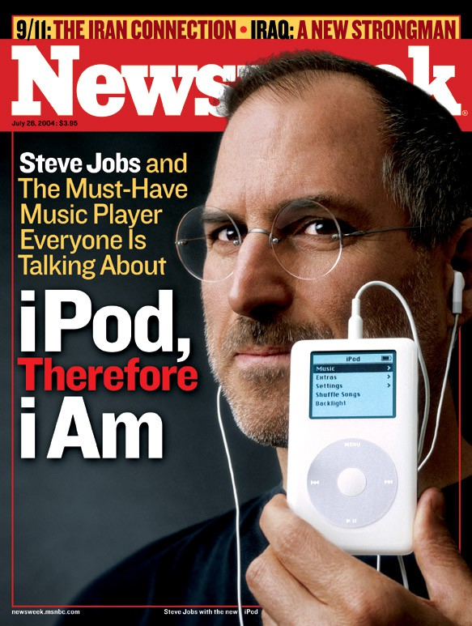
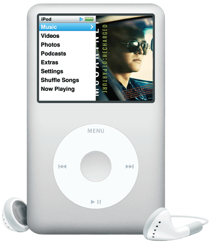

It’s the cult. It’s what kept the damn thing afloat during some of the most incredibly
bad business decisions I’ve seen anywhere.
– Former Apple CEO Gil Amelio
You could go so far as to call it a cult. Apple’s marketing has embraced the powers of scarcity and social proof. And that power goes all the way back to 1984’s commercial. It spoke to an entire generation: throw off your shackles. Break the status quo. Think different.
The beginning
World’s first $1 trillion company
On August 2, 2018, Apple made history by becoming the world’s first $1 trillion company. While it see-sawed in the second half of the year, losing over $450 billion in the last quarter of 2018, it has since recovered most of that amount and now stands at $914.603 billion as, of June 2019. Here's the story of how the company was built and the man central to its founding and growth.
In October 2011, Steve Jobs passed away at the age of 56. He had just left the CEO post at Apple, the company he co-founded, for the second time. Jobs was an entrepreneur through and through, and the story of his rise is the story of Apple as a company, along with some very interesting twists.
From Blue boxes to Apple
Apple has certainly played a major roll in paving a path to high-end electronics and devices over the past decade
that has raised the bar for companies, and has even created a few new industries to boot. However, Apple, like Steve,
had humble beginnings.
Steve Jobs started Apple with partner Steve Wozniak in 1976. Apple’s first office was Job's
garage where they were building the computers that they were selling. From Apple’s humble beginnings spawned the Apple II,
the first real PC to hit it big. While the power of computers had once been only available to large businesses who could
afford the staggering price-point, it was now available to classrooms, dens, and offices. The Apple II sold for about $1300,
compared to similar solutions that were around $8000. In the late 1970’s, that was more than enough for a new car.
Leaving Apple
By 1978, Apple was making $2 million in profits solely on the strength of the Apple II. The Apple II wasn't state of
the art, but it did allow computer enthusiasts to create and sell their own programs.
Apple's board wasn't too fond of such a power imbalance in the company, however. Jobs and the board agreed to add John
Sculley to the executive team in 1983. In 1985, the board ousted Jobs in favor of Sculley.
Steve Jobs was rich and unemployed. Although he wasn't working at Apple, he was far from idle. During this time, from
1985 to 1996, Jobs was involved in two big deals; the first of which was an investment. In 1986, Jobs purchased a
controlling stake in a company called Pixar from George Lucas. The company was struggling, but their eventual success in
digital animation led to an initial public offering (IPO) that earned Jobs around $1 billion.
The second was a return to his old obsession with computers, founding NeXT to create high-end computers.
These were expensive machines with an operating system representing the best attempt yet at making the power of
UNIX fit into a graphical user interface.
1996,
The critical year in which Steve Jobs sold NeXT, the computer maker he had founded, to Apple, returning him to the company he had started, eleven years after he had been ousted.
Hello again! : The comeback.
When Jobs returned, the company wasn't in a good place. Apple had begun to flounder as cheap PCs running Windows flooded the market. Jobs found himself in the driver's seat again and took some drastic steps to turn around Apple's decline. The company asked for and received, a $150 million investment from Bill Gates. Jobs used the money to ramp up advertising and highlight the products Apple already offered while choking off R&D money in non-producing areas.
The revolution
It's impossible to sum up Jobs' career in a single article, but a few lessons stick out. First, innovation counts for a lot, but innovative products fail without proper marketing. Second, there are no straight paths to success. Jobs did get wealthy very early on, but he would be a footnote today if he didn't return to Apple in the 90s. At one point, Jobs was kicked out of the company he helped create for being hard to work with. Rather than change, he bided his time, then took over again, and this time his attitude was seen as part of his genius.
iMac
Twenty years ago today Steve Jobs introduced iMac, an ambitious new Mac aimed specifically at easy Internet access. It not only redefined the design and styling of tech products but charted a strategic course that would take Apple from being a minority PC maker to the world's most valuable tech company.
Mac Pro
Power to change
everything.


MacBook
Air
The world's thinnest notebook
When Steve Jobs introduced the first MacBook Air, the ultra-light laptop came with many compromises in terms
of power and ports. It was glorious. And painful.
A couple of years later those compromises largely disappeared and it became not only the most flexible MacBook
ever, but one of the most popular and least expensive. Oh, and every other vendor in the industry raced to copy it.
"Something is in the air"
The MacBook Air that Jobs slid with his characteristic flourish out of manila envelope was seemingly designed to
be as much an object of lust and technical showpiece as it was a shipping product.
The company no longer saw people chained to a desk. It saw work (and play!) being done in the living room, on a
beanbag, in a park, or in the sky.
iPod
The day Steve jobs launched iPod, it changed Apple forever.
"With iPod, Apple has invented a whole new category of digital music player that lets you put your entire music collection in your pocket and listen to it wherever you go," said Steve Jobs as the first iPod launched in 2001. "With iPod, listening to music will never be the same again."
A 1000 songs in your pocket
iPod introduction in October 2001 was groundbreaking. “1000 songs in your pocket” – it was absolutely unbelievable, no
one did it before. There are only few products that shaped the lifestyle of a generation, found its way into popular culture
and became the archetype of an entire product group like this.
When the iPod starting supporting Windows PCs, it opened Apple up to a whole new world of people who would never have considered buying
anything from Apple. It took Apple from being a computer company for Mac users to a consumer electronics company for the masses. That led
to the iPhone and the iPad, both of which are huge cross-platform products.